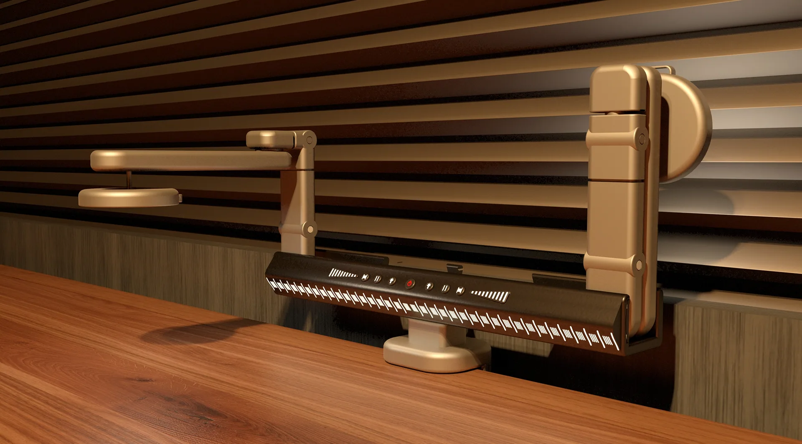
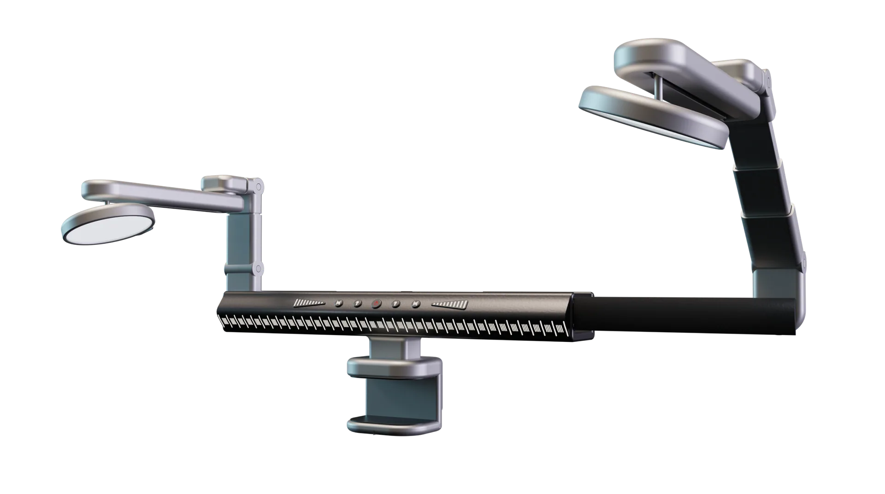
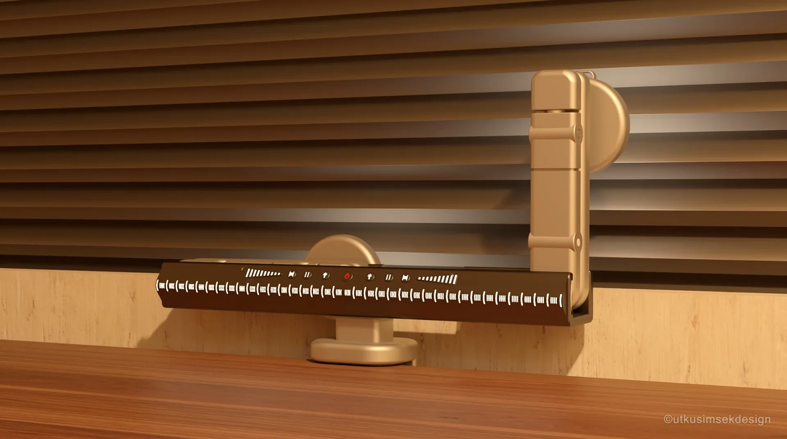
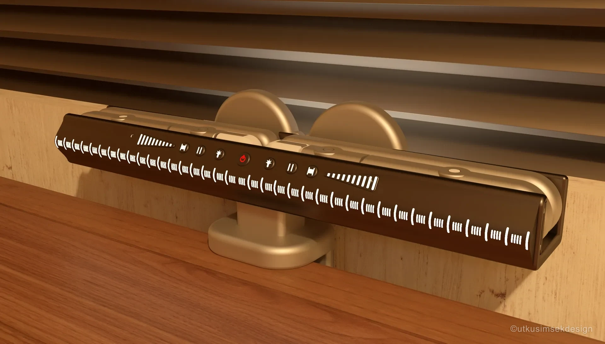
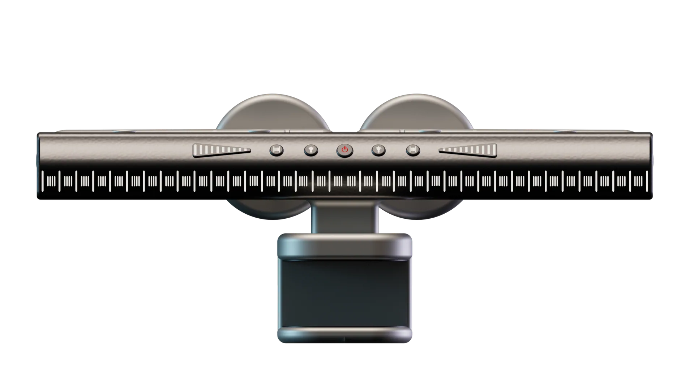
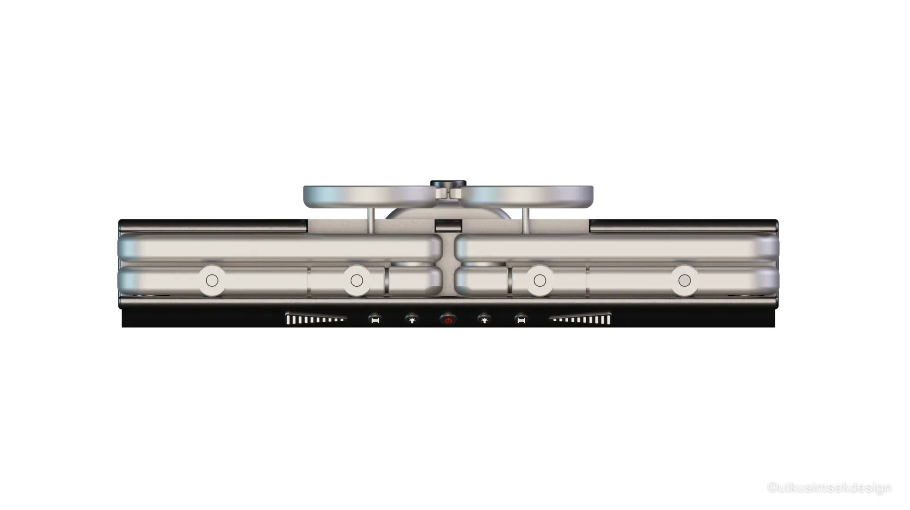
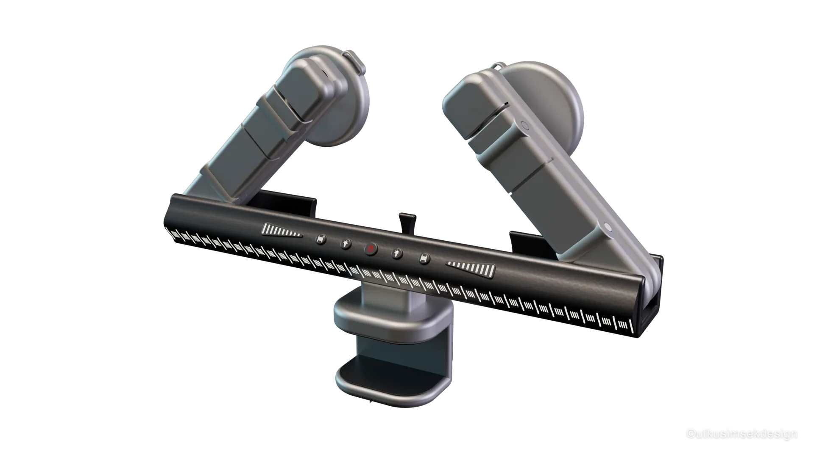

Aydınlatma
2023 · Katlanabilir Form
Foldesk Lamp
Katlanabilir Çalışma Aydınlatması
Aşağı Kaydır
Foldesk Lamp — Katlanabilir Kompakt Çalışma Aydınlatması
Foldesk Lamp, dar çalışma alanları için geliştirilen, katlanabilir mekanizmaya sahip kompakt bir masa aydınlatma çözümüdür. Lineer LED ışık barı ve ayarlanabilir başlık yapısı sayesinde homojen ve odaklı ışık dağılımı sunarken, çok eksenli menteşe sistemi ile farklı çalışma senaryolarına kolayca uyum sağlar.
Metal gövde ve hassas ray mekanizması, hem dayanıklılığı hem de akıcı hareket kabiliyetini destekler. Katlandığında minimum yer kaplayan tasarım, açıldığında geniş bir aydınlatma yüzeyi oluşturarak özellikle mimar, mühendis ve tasarımcılar için ergonomik ve verimli bir çalışma deneyimi sağlar.







Çalışma yüzeyi boyunca uzanan lineer LED dizgesi, gölgesiz ve homojen bir aydınlatma alanı yaratır; ek başlık yapısıyla odaklanmış ışığa geçişi mümkün kılar.
Birden fazla eksende dönen menteşe yapısı, lambanın okuma, çizim ve detay çalışması gibi farklı senaryolara saniyeler içinde uyum sağlamasını sağlar.
Katlandığında masada minimum yer kaplayan ince profil; açıldığında geniş bir aydınlatma yüzeyine dönüşerek dar çalışma alanlarında bile esneklik sunar.
Metal gövde uzun ömürlü kullanım sunarken, hassas ray mekanizması başlık konumunun yumuşak ve titreşimsiz şekilde değiştirilmesine olanak tanır.